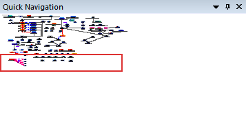
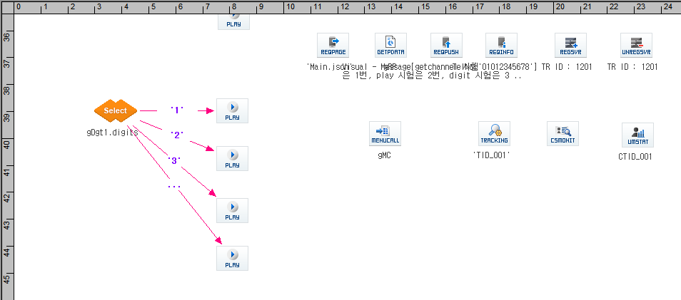

| Quick Map(Navigation) | 시작 다음 이전 |
Canvas 의 화면을 축소한 미니맵 화면에 전체를 표시하고 사용자가 미니맵 화면을 마우스로 움직이면 Canvas 화면이 이동합니다. Quick Map 창의 기본 위치는 Project Workspace 의 바로 아래에 위치하며, 창을 마우스로 드래그 하여 다른곳에 위치 시킬 수 있습니다.
Quick Map 의 표시
· Canvas 에 시나리오가 오픈되어 표시 될 때만 표시 됩니다. · Canvas 에 보이는 부분이 미니맵에 표시된 적색 사각형 부분이며, 적색 사각형을 드래그하여 이동하면 Canvas 의 화면도 이동하고, 적색 사각형 부분이 아닌 미니맵을 클릭하면 마우스를 중심으로 적색 사각형 부분이 이동하면서 Canvas 도 이동 합니다.
 
|
| Copyrights(C) Bridgetec.co.kr. All Rights Reserved | 시작 다음 이전 |